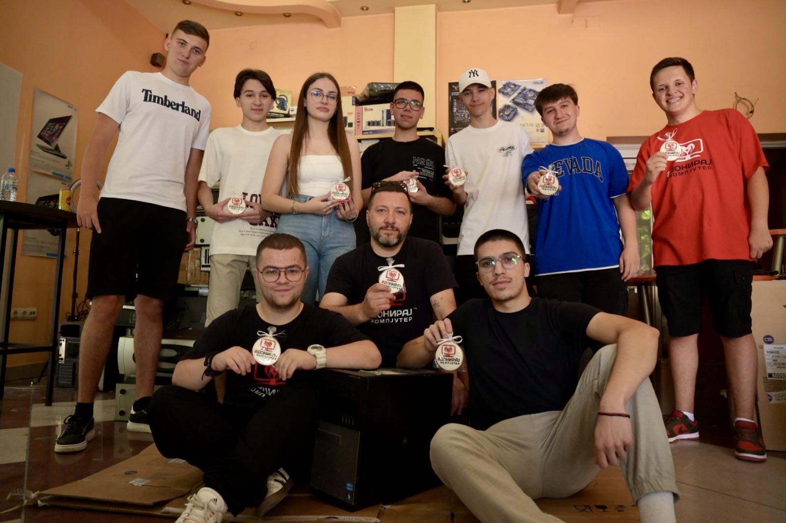
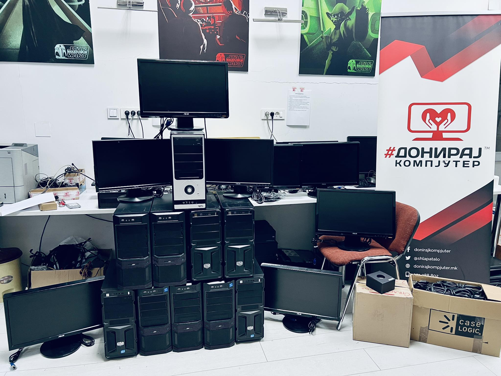
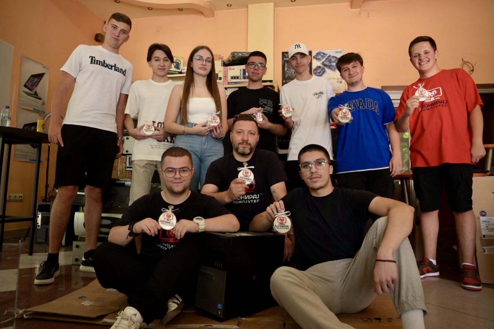
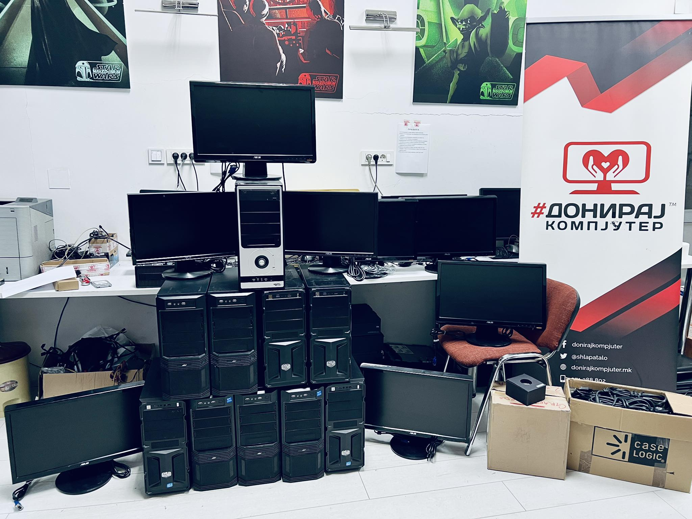

.jpg)
Projects
Doniraj Kompjuter
During my time at Doniraj Kompjuter, I worked on rebuilding and refurbishing computers that would otherwise be discarded. I helped bring new life to over 300 PCs, upgrading their components, cleaning systems, and preparing them for donation to schools and families in need. The experience taught me the value of technical precision and patience, but also showed me how something as small as a working computer can make a huge difference in someone’s life. It’s what pushed me to keep improving — both as a technician and as a person.
 



About Me
I’m Angel, a student currently studying Software Engineering with experience in both hardware and software development. I’m passionate about learning full-stack development and improving my skills through real-world projects. My focus right now is on writing clean code, creating efficient web applications, and building a professional foundation for my career.
Education
Technical High School "Kiro Spandžov - Brko"
At high school, I specialized in Electrical Engineering for Computers and Automation, where I gained hands-on experience with both hardware and software. I learned C++, Python, and HTML/CSS, alongside basic electronics concepts. I also worked on Arduino and Raspberry Pi projects, experimented with PLCs, and created small SQL databases as part of various practical assignments.
Brainster Next College
I chose to study Software Engineering at Brainster Next College because I wanted to focus on this field and gain a solid foundation in modern software practices. During my first year, I’ve been exposed to various programming concepts, tools, and project-based learning that help me understand how software is built, tested, and maintained in real-world scenarios.
Doniraj Kompjuter
During my time at Doniraj Kompjuter, I worked on rebuilding and refurbishing computers that would otherwise be discarded. I helped bring new life to over 300 PCs, upgrading their components, cleaning systems, and preparing them for donation to schools and families in need. The experience taught me the value of technical precision and patience, but also showed me how something as small as a working computer can make a huge difference in someone’s life. It’s what pushed me to keep improving — both as a technician and as a person.
Free Music Downloader
The idea for this project started with something simple — my mom needed more music for her shop. Instead of just downloading songs manually, I decided to create an app that could do it automatically. Using Python and Flask, I built a web tool that finds about ten songs per artist, converts them to MP3, and bundles them into a ZIP for easy use. What began as a small favor for my mom turned into a fully working app that anyone can use for free on my GitHub . It’s one of those projects that reminded me why I love building — solving real problems for real people.